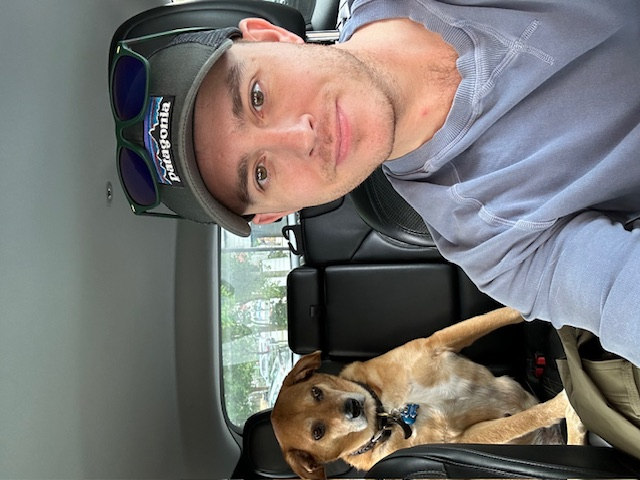

Bernie Eisbrenner
Developer
I am an undergraduate History student minoring in Environmental Economics, an energy management software professional, an entrepreneur, and a guy who likes beer among other things. I am from Plymouth, Michigan. I have a first-class hound dog named Simba. My wife is from Manisa, Turkey. As this project's developer I vibe-coded with Claude to create the html and css for the site. I also added a few chunks of text in my own hand. When I first accepted the role of developer I hadn't realized it would land me the majority of the team's work, but for much that is given much is expected. That being the case the role of developer comes with a de facto veto over what gets on the site that approaches something like supreme dicatatorial power, which is honestly more intoxicating than beer. Neither of these have kept me from my responsibility to the team.
Acknowledgments
[Optional: Include a